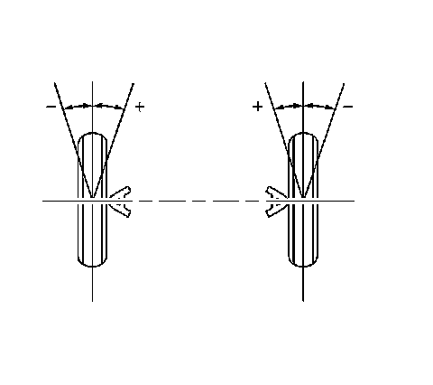

Toe Description
Toe Description
Toe Description:

Toe is a measurement of how much the front and/or rear wheels are turned in or out from a straight-ahead position. When the wheels are turned in, toe is positive (+). When the wheels are turned out, toe is negative (-). The actual amount of toe is normally only a fraction of a degree. The purpose of toe is to ensure that the wheels roll parallel.
Toe also offsets the small deflections of the wheel support system that occur when the vehicle is rolling forward. In other words, with the vehicle standing still and the wheels set with toe-in, the wheels tend to roll parallel on the road when the vehicle is moving.
Improper toe adjustment will cause premature tire wear and cause steering instability.